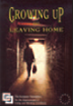
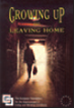
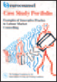
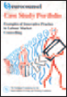

Eurofound at 40
Hard to believe, perhaps, but the words cited opposite are those inscribed in the founding Regulation establishing the European Foundation for the Improvement of Living and Working Conditions back in 1975. Words that could just as easily be used today to describe both the context facing the European Union and the role of the Agency 40 years on.
They are testament, surely, to the sincere and consistent commitment of the then European Community, and its successors, to the social dimension – and a fundamental element in contributing to the last half century of Europe’s undisputed economic and social progress. Manifested early on in the first social action programme in 1973, this unrelenting commitment to defining a social face to this new community of countries continued with the establishment of what later became ‘Eurofound’ in Dublin shortly afterwards. A tripartite European Agency to provide data and analysis to help shape policy in social and work-related matters was a bold and defining element in this move towards locking the social dimension into the development and growth of the ever-expanding Union.


Throughout these years, Eurofound has continued to contribute to this early and strategic vision of a social Europe. By the late 1970s, work on wage systems was already a core part of the Agency’s activities. Other early activities focused on new forms of work organisation, shiftwork and physical and psychological constraints at work. In the 1980s, unsurprisingly, the focus was on the long-term unemployed and in 1990 work on the first pan-European survey of working conditions was under way.
As the Union has grown, so too has the scope of the Agency’s work, taking on responsibility for monitoring and analysing employment change via the European Monitoring Centre on Change, and today its scope encompasses 28 Member States and several candidate countries and observer states. The sixth series of the working conditions survey covering 34 countries is now in preparation, while surveys on quality of life and on company practices have similarly evolved over time. Comparative analysis across countries continues to be Eurofound’s key contribution in many areas, drawing also on input from the network of European correspondents. Meanwhile, original research has made significant input to several central policy debates. Most recently, it was Eurofound’s calculation of the estimated cost to Europe’s economy of the exclusion of the 14 million young people not in employment, education or training (about 1.2% of GDP per annum) that galvanised action for the Youth Guarantee now being implemented across Europe.
Clearly, over the past 40 years much has changed: life expectancy in the early member countries of the European Community in the 1970s has typically increased by between six and eight years; the employment rate of women has risen to about 63% compared with a rate of just 27% in 1975 in countries such as Ireland; fertility rates have declined in most countries. Such changes have resulted in topics such as job quality, active ageing and long-term care emerging as key policy concerns today, requiring research and analysis of the highest order. In parallel, from a base of little knowledge and awareness, demand for reliable information on quality of life and work across Europe has grown dramatically over four decades, a gap filled – in part, at least – by Eurofound’s pan-European surveys. These provide insight into trends in working and living conditions – monitoring levels of trust in public institutions, access to public services, well-being at work and so much more.
At all times during these developments, the Agency has sought to act and react where it is most pertinent to the social policy agenda and priorities at EU level. As the EU faces another new and challenging chapter and as Eurofound marks 40 years of contribution, the Agency’s role has never been more relevant – continuing to strive to deliver timely, topical and accessible information and analysis to help policymakers shape a better future for us all.


 



 



 European Working Conditions Survey – monitoring the changing world of work for over 20 years
European Working Conditions Survey – monitoring the changing world of work for over 20 years European Quality of Life Survey – highlighting the views and concerns of Europeans since 2003
European Quality of Life Survey – highlighting the views and concerns of Europeans since 2003 European Company Survey – 10 years of exploring European companies: what makes a company a winner?
European Company Survey – 10 years of exploring European companies: what makes a company a winner?  Ageing workforce – Eurofound’s work includes a database of over 200 cases of good company practice
Ageing workforce – Eurofound’s work includes a database of over 200 cases of good company practice Work-related stress – the subject of research since 1996, culminating in the 2014 joint report with EU-OSHA on psychosocial
risks
Work-related stress – the subject of research since 1996, culminating in the 2014 joint report with EU-OSHA on psychosocial
risks  New forms of employment – Eurofound’s innovative research over two decades into new ways of working and technological developments
New forms of employment – Eurofound’s innovative research over two decades into new ways of working and technological developments BEST Bulletin on shiftwork – pioneering research into working time arrangements and their impact on health and quality of life
BEST Bulletin on shiftwork – pioneering research into working time arrangements and their impact on health and quality of life